Special functions¶
The library includes routines for calculating the values of Airy functions, Bessel functions, Clausen functions, Coulomb wave functions, Coupling coefficients, the Dawson function, Debye functions, Dilogarithms, Elliptic integrals, Jacobi elliptic functions, Error functions, Exponential integrals, Fermi-Dirac functions, Gamma functions, Gegenbauer functions, Hypergeometric functions, Laguerre functions, Legendre functions and Spherical Harmonics, the Psi (Digamma) Function, Synchrotron functions, Transport functions, Trigonometric functions and Zeta functions. Any error returned by the special function (such as invalid input domains, etc…) will be signaled.
Overview¶
Airy Functions¶
- sf.airyAi(x)¶
- sf.airyBi(x)¶
The Airy functions and are defined by the integral representations,
For further information see Abramowitz & Stegun, Section 10.4.
- sf.airyAi_scaled(x)¶
- sf.airyBi_scaled(x)¶
These routines compute a scaled version of the Airy function . For x>0 the scaling factor is
and is 1 for x<0.
- sf.airyAi_deriv(x)¶
- sf.airyAi_deriv_scaled(x)¶
- sf.airyBi_deriv(x)¶
- sf.airyBi_deriv_scaled(x)¶
These routines compute the Airy function derivatives and their scaled version with the same scaling factor as the airyAi_scaled and airyBi_scaled versions.
- sf.airyAi_zero(n)¶
- sf.airyAi_deriv_zero(n)¶
- sf.airyBi_zero(n)¶
Bessel Functions¶
- sf.besselJ(n, x)¶
These routines compute the regular cylindrical Bessel function of n-th order, Jn(x)
Bessel functions J0(red), J1(green), J2(blue)¶
- sf.besselJ_zero(n, s)¶
Return the s-th zero of the Bessel Jn function.
- sf.besselY(n, x)¶
These routines compute the irregular cylindrical Bessel function of n-th order, Yn(x)

Bessel functions Y0(red), Y1(green), Y2(blue)¶
- sf.besselYnu(nu, x)¶
Compute the irregular cylindrical Bessel function of fractional order
 , .
, .
- sf.besselI(n, x)¶
- sf.besselI_scaled(n, x)¶
Regular modified cylindrical Bessel function of n-th order and their scaled version.
- sf.besselInu(n, x)¶
- sf.besselInu_scaled(n, x)¶
These routines compute the (scaled) regular modified Bessel function of fractional order
with for x>0, nu>0.
- sf.besselK(n, x)¶
- sf.besselK_scaled(n, x)¶
Irregular modified cylindrical Bessel function of order n and their scaled version.
- sf.besselKnu(nu, x)¶
- sf.bessellnKnu(nu, x)¶
- sf.besselKnu_scaled(nu, x)¶
Compute the (scaled or logarithm) irregular modified Bessel function of fractional order for x>0, nu>0.
- sf.besselj(l, x)¶
Compute the regular spherical Bessel function of l-th order.
- sf.bessely(l, x)¶
Compute the irregular spherical Bessel function of l-th order.
- sf.besseli_scaled(l, x)¶
Compute the scaled regular modified spherical Bessel function of l-th order.
- sf.besselk(l, x)¶
Compute the irregular modified spherical Bessel function of l-th order.
Clausen Function¶
- sf.clausen(x)¶
The Clausen function is defined by the following integral,

It is related to the dilogarithm by .
Coulomb Functions¶
- sf.hydrogenicR_1(Z, r)¶
These routines compute the lowest-order normalized hydrogenic bound state radial wavefunction

- sf.hydrogenicR(n, l, Z, r)¶
These routines compute the n-th normalized hydrogenic bound state radial wave function,
where is the generalized Laguerre polynomial (see Laguerre Functions). The normalization is chosen such that the wave function
 is given by .
is given by .
- sf.coulomb_wave_FG(eta, x, L_F, k)¶
This function computes the Coulomb wave functions , and their derivatives , with respect to x. The parameters are restricted to L, L-k > -1/2, x > 0 and integer k.
Note that L itself is not restricted to being an integer. The results are returned as:
F, Fp, G, Gp, exp_F, exp_G = coulomb_wave_FG(eta, x, L_F,k)
with
FpandGpbeing the derivates. If an overflow occurs, GSL_EOVRFLW is returned as an error and scaling exponents are stored in the return values exp_F, exp_G.
- sf.coulomb_CL(L, eta)¶
This function computes the Coulomb wave function normalization constant 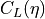 for L > -1.
Coupling Coefficients¶
- sf.coupling_3j(two_ja, two_jb, two_jc, two_ma, two_mb, two_mc)¶
These routines compute the Wigner 3-j coefficient,
where the arguments are given in half-integer units, ja = two_ja/2, ma = two_ma/2, etc.
- sf.coupling_6j(two_ja, two_jb, two_jc, two_ma, two_mb, two_mc)¶
These routines compute the Wigner 6-j coefficient,
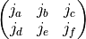
where the arguments are given in half-integer units, ja = two_ja/2, ma = two_ma/2, etc.
- sf.coupling_9j(two_ja, two_jb, two_jc, two_jd, two_je, two_jf, two_jg, two_jh, two_ji)¶
These routines compute the Wigner 9-j coefficient,
where the arguments are given in half-integer units, ja = two_ja/2, ma = two_ma/2, etc.
Dawson Function¶
- sf.dawson(x)¶
The Dawson integral is defined by
A table of Dawson’s integral can be found in Abramowitz & Stegun, Table 7.5.
Debye Functions¶
- sf.debye(n, x)¶
The Debye functions are defined by the following integral,
For further information see Abramowitz & Stegun, Section 27.1.
Dilogarithms¶
- sf.dilog(x)¶
These routines compute the dilogarithm for a real argument. In Lewin’s notation this is Li2(x), the real part of the dilogarithm of a real x. It is defined by the integral representation
Note that for x <= 1, and for x > 1.
Note that Abramowitz & Stegun refer to the Spence integral as the dilogarithm rather than .
- sf.cdilog(z)¶
Compute the dilogarithm for a complex argument.
Elliptic Integrals¶
The Legendre forms of elliptic integrals , and are defined by,
The complete Legendre forms are denoted by and . The notation used here is based on Carlson, Numerische Mathematik 33 (1979) 1 and differs slightly from that used by Abramowitz & Stegun, where the functions are given in terms of the parameter and n is replaced by -n.
The Carlson symmetric forms of elliptical integrals , , and are defined by,
- sf.ellint_D(phi, k, n)¶
These functions compute the incomplete elliptic integral which is defined through the Carlson form by the following relation,
The argument n is not used and will be removed in a future release.
- sf.ellint_E(phi, lk)¶
These routines compute the incomplete elliptic integral to the accuracy specified by the mode variable mode. Note that Abramowitz & Stegun define this function in terms of the parameter .
- sf.ellint_F(phi, k)¶
These routines compute the incomplete elliptic integral to the accuracy specified by the mode variable mode. Note that Abramowitz & Stegun define this function in terms of the parameter .
- sf.ellint_P(phi, k, n)¶
These routines compute the incomplete elliptic integral to the accuracy specified by the mode variable mode. Note that Abramowitz & Stegun define this function in terms of the parameters and
 , with the change of sign .
, with the change of sign .
- sf.ellint_RC(x, y)¶
These routines compute the incomplete elliptic integral to the accuracy specified by the mode variable mode.
- sf.ellint_RD(x, y, z)¶
These routines compute the incomplete elliptic integral to the accuracy specified by the mode variable mode.
- sf.ellint_RF(x, y, z)¶
These routines compute the incomplete elliptic integral to the accuracy specified by the mode variable mode.
- sf.ellint_RJ(x, y, z, p)¶
These routines compute the incomplete elliptic integral to the accuracy specified by the mode variable mode.
Elliptic Function¶
- sf.elljac(u, m)¶
This function computes the Jacobian elliptic functions , , by descending Landen transformations. It returns sn, cn and dn as:
sn, cn, dn = elljac(u, m)
Error Functions¶
- sf.erf(x)¶
The error function erf(x)
- sf.erfc(x)¶
- sf.log_erfc(x)¶
These routines compute the (logarithmic) complementary error function
 .
.
- sf.erf_Q(1)¶
These routines compute the upper tail of the Gaussian probability function
- sf.erf_Z(1)¶
These routines compute the Gaussian probability density function .
- sf.hazard(x)¶
These routines compute the hazard function for the normal distribution.
Exponential Functions¶
- sf.exp(x)¶
These routines provide an exponential function 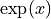.
- sf.exp_err(x, dx)¶
This function exponentiates x with an associated absolute error dx.
- sf.exp_mult(x, y)¶
These routines exponentiate x and multiply by the factor y to return the product .
- sf.exp_mult_err(x, dx, y, dy)¶
This routine computes the product for the quantities x, y with associated absolute errors dx, dy.
- sf.expm1(x)¶
These routines compute the quantity 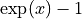 using an algorithm that is accurate for small x.
- sf.exprel(x)¶
These routines compute the quantity
 using an algorithm that is accurate for small x. For small x the algorithm is based on the expansion .
using an algorithm that is accurate for small x. For small x the algorithm is based on the expansion .
- sf.exprel_2(x)¶
These routines compute the quantity using an algorithm that is accurate for small x. For small x the algorithm is based on the expansion
 .
.
- sf.exprel_n(n, 1)¶
These routines compute the N-relative exponential given by,
Exponential Integrals¶
- sf.expint_E(n, x)¶
These routines compute the exponential integral of order n,
- sf.expint_Ei(x)¶
These routines compute the exponential integral ,
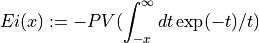
where PV denotes the principal value of the integral.
- sf.Shi(x)¶
These routines compute the integral .
- sf.Chi(x)¶
These routines compute the integral , where is the Euler constant (available as the macro M_EULER).
- sf.expint_3(x)¶
These routines compute the third-order exponential integral for x >= 0.
- sf.Si(x)¶
These routines compute the Sine integral .
- sf.Ci(x)¶
These routines compute the Cosine integral for x > 0.
- sf.atanint(x)¶
These routines compute the Arctangent integral, which is defined as .
Fermi Dirac Function¶
- sf.fermi_dirac(n, x)¶
The complete Fermi-Dirac integral Fn(x) is given by,
Note that the Fermi-Dirac integral is sometimes defined without the normalization factor in other texts.
- sf.fermi_dirac_inc(x, b)¶
These routines compute the incomplete Fermi-Dirac integral with an index of zero, 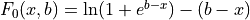.
The incomplete Fermi-Dirac integral is given by,

Gamma and Beta Functions¶
- sf.Shi(x)¶
Compute the integral .
- sf.Chi(x)¶
Compute the integral
where γE is the Euler constant.
- sf.Si(x)¶
Compute the Sine integral .
- sf.Ci(x)¶
Compute the Cosine integral for x > 0.
- sf.atanint(x)¶
compute the Arctangent integral, which is defined as .
- sf.fact(n)¶
Compute the factorial n!. The factorial is related to the Gamma function by .
- sf.doublefact(n)¶
Compute the double factorial
 .
.
- sf.lnfact(n)¶
These routines compute the logarithm of the factorial of N, log(n!). The algorithm is faster than computing ln(Γ (n+1)).
- sf.lndoublefact(n)¶
Compute the logarithm of the double factorial of N, log(n!!).
- sf.choose(n, k)¶
Compute the combinatorial factor
- sf.lnchoose(n, k)¶
Compute the logarithm of “n choose m”. This is equivalent to the sum 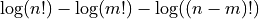.
- sf.gamma(x)¶
Compute the Gamma function Γ (x), subject to x not being a negative integer or zero. The function is computed using the real Lanczos method.
- sf.lngamma(x)¶
Compute the logarithm of the Gamma function,
 , subject to x not being a negative integer or zero. For x<0 the real part of is returned, which is equivalent to . The function is computed using the real Lanczos method.
, subject to x not being a negative integer or zero. For x<0 the real part of is returned, which is equivalent to . The function is computed using the real Lanczos method.
- sf.gammastar(x)¶
These routines compute the regulated Gamma Function for x > 0. The regulated gamma function is given by,
and is a useful suggestion of Temme.
- sf.gammainv(x)¶
These routines compute the reciprocal of the gamma function, using the real Lanczos method.
- sf.lngammac(z)¶
This routine computes for complex z and z not a negative integer or zero, using the complex Lanczos method. The returned parameters are and . Note that the phase part (arg) is not well-determined when is very large, due to inevitable roundoff in restricting to (-pi,pi]. This will result in a GSL_ELOSS error when it occurs. The absolute value part (lnr), however, never suffers from loss of precision.
The functions returns:
lnr, arg = lngammac(z)
- sf.beta(a, b)¶
These routines compute the Beta Function, subject to a and b not being negative integers.
- sf.lnbeta(a, b)¶
These routines compute the logarithm of the Beta Function, subject to a and b not being negative integers.
- sf.beta_inc(a, b, x)¶
These routines compute the normalized incomplete Beta function where for 0 <= x <= 1. For a > 0, b > 0 the value is computed using a continued fraction expansion. For all other values it is computed using the relation .
- sf.taylorcoeff(n, x)¶
These routines compute the Taylor coefficient for x >= 0, n >= 0.
- sf.poch(a, x)¶
These routines compute the Pochhammer symbol 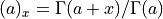. The Pochhammer symbol is also known as the Apell symbol and sometimes written as (a,x). When a and a+x are negative integers or zero, the limiting value of the ratio is returned.
- sf.lnpoch(a, x)¶
These routines compute the logarithm of the Pochhammer symbol, .
- sf.pochrel(a, x)¶
These routines compute the relative Pochhammer symbol .
- sf.gamma_inc(a, x)¶
These functions compute the unnormalized incomplete Gamma Function for a real and x >= 0.
- sf.gamma_inc_Q(a, x)¶
These routines compute the normalized incomplete Gamma Function for a > 0, x >= 0.
- sf.gamma_inc_P(a, x)¶
These routines compute the complementary normalized incomplete Gamma Function for a > 0, x >= 0. Note that Abramowitz & Stegun call P(a,x) the incomplete gamma function (section 6.5).
Gegenbauer Functions¶
- sf.gegenpoly(n, lambda, x)¶
These functions evaluate the Gegenbauer polynomial for a specific value of n, lambda, x subject to , n >= 0.
Hypergeometric functions¶
- sf.hyperg0F1(a, b)¶
These routines compute the hypergeometric function
 .
.
- sf.hyperg1F1(m, n, x)¶
These routines compute the confluent hypergeometric function 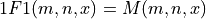. The parameters m and n can be integer or real numbers.
- sf.hypergU(m, n, x)¶
These routines compute the confluent hypergeometric function . The parameters m and n can be integer or real numbers.
- sf.hyperg2F1(a, b, c, x)¶
These routines compute the Gauss hypergeometric function for .
If the arguments (a,b,c,x) are too close to a singularity then the function can return the error code
GSL_EMAXITERwhen the series approximation converges too slowly. This occurs in the region of x=1, c - a - b = m for integer m.
- sf.hyperg2F1conj(a, c, x)¶
These routines compute the Gauss hypergeometric function where a is complex parameter, c and x are real parameters with .
Laguerre Functions¶
- sf.laguerre(n, a, x)¶
The generalized Laguerre polynomials are defined in terms of confluent hypergeometric functions as
and are sometimes referred to as the associated Laguerre polynomials. They are related to the plain Laguerre polynomials by
and
For more information see Abramowitz & Stegun, Chapter 22.
Lambert W Functions¶
Lambert’s W functions, W(x), are defined to be solutions of the equation  .
This function has multiple branches for x < 0; however, it has only two real-valued branches.
We define 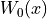 to be the principal branch, where W > -1 for x < 0, and to be the other real branch, where W < -1 for x < 0.
.
This function has multiple branches for x < 0; however, it has only two real-valued branches.
We define 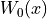 to be the principal branch, where W > -1 for x < 0, and to be the other real branch, where W < -1 for x < 0.
- sf.lambertW0(x)¶
These compute the principal branch of the Lambert W function, .
- sf.lambertWm1(x)¶
These compute the secondary real-valued branch of the Lambert W function, .
Legendre Functions and Spherical Harmonics¶
- sf.legendreP(n, x)¶
Legendre polynomials¶
These functions evaluate the Legendre polynomial for a specific value of l, x subject to l >= 0,

- sf.legendreQ(n, x)¶
These routines compute the Legendre function for x > -1, x != 1 and l >= 0.
- sf.legendrePlm(l, m, x)¶
These routines compute the associated Legendre polynomial for m >= 0, l >= m,
.
- sf.legendresphPlm(l, m, x)¶
These routines compute the normalized associated Legendre polynomial suitable for use in spherical harmonics. The parameters must satisfy m >= 0, l >= m,
. Theses routines avoid the overflows that occur for the standard normalization of .
- sf.conicalP(n, lambda, x)¶
These routines compute the regular Spherical Conical Function for x > -1 where n in {-12, 0, 12, 1}
- sf.conicalPsphreg(l, lambda, x)¶
These routines compute the Regular Spherical Conical Function for x > -1, l >= -1.
- sf.conicalPcylreg(m, lambda, x)¶
These routines compute the Regular Cylindrical Conical Function for x > -1, m >= -1.
- sf.legendre_H3d(l, lambda, eta)¶
These routines compute the l-th radial eigenfunction of the Laplacian on the 3-dimensional hyperbolic space , l >= 0. In the flat limit this takes the form .
Logarithm and Related Functions¶
- sf.log(x)¶
These routines compute the logarithm of x,
 , for x > 0.
, for x > 0.
- sf.log_abs(x)¶
These routines compute the logarithm of the magnitude of x,
 , for x ne 0.
, for x ne 0.
- sf.log_1plusx(x)¶
These routines compute for x > -1 using an algorithm that is accurate for small x.
- sf.log_1plusx_mx(x)¶
These routines compute for x > -1 using an algorithm that is accurate for small x.
Psi (Digamma) Functions¶
The polygamma functions of order n are defined by
where  is known as the digamma function.
is known as the digamma function.
- sf.psi(x)¶
These routines compute the digamma function for general x, x ne 0.
- sf.psi_1(x)¶
These routines compute the Trigamma function for general x.
- sf.1piy(y)¶
These routines compute the real part of the digamma function on the line 1+i y, .
- sf.psi_n(n, x)¶
These routines compute the polygamma function for n >= 0, x > 0.
Synchrotron Functions¶
- sf.synchrotron1(n, x)¶
These routines compute the first synchrotron function for x >= 0.
- sf.synchrotron2(n, x)¶
These routines compute the second synchrotron function for x >= 0.
Transport Functions¶
The transport functions J(n,x) are defined by the integral representations  .
.
- sf.transport(n, x)¶
These routines compute the transport function with
Zeta Functions¶
- sf.zeta(s)¶
The Riemann zeta function is defined by the infinite sum . These routines compute the Riemann zeta function for arbitrary s, .
- sf.zetam1(s)¶
For large positive argument, the Riemann zeta function approaches one. In this region the fractional part is interesting, and therefore we need a function to evaluate it explicitly. These routines compute for arbitrary s, .
- sf.eta(s)¶
The eta function is defined by . These routines compute the eta function eta(s) for arbitrary s.
- sf.hzeta(s, q)¶
These routines compute the Hurwitz zeta function for s > 1, q > 0.